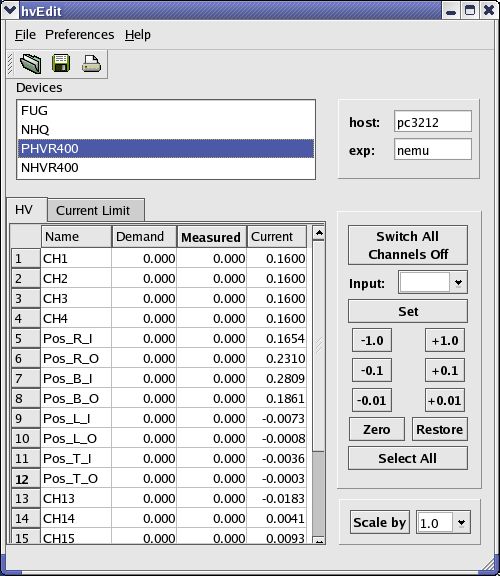

Usage
This GUI is used to set the high voltages (HV) of a midas
experiment, especially the low energy muon spin rotation (LEmuSR)
experiment at PSI. The
functionality is rather straight forward and hence the different menus
are
going to be explained only very briefly.
The startup syntax is:
hvEdit [--help | -h hostName -e expName]
where hostName is the name of the host computer
running the MIDAS high voltage experiment,
expName is the name of the MIDAS experiment.
Menus
- Open
- Save
- Print
- Exit
This will disconnect 'hvEdit' from the current experiment and flash
the GUI.
An open dialog pops up were one can choose from predefined HV
settings. They are
device specific and therefore only a HV table for this specfic device
will be loaded.
Details about the structure of the 'hv'-files are found under 'Technicalities'.
A current HV setting can be saved to a file. The file name has to
look like
deviceName_whatever.xml, e.g. fug-18kv_nosample.xml
(for details see
'Technicalities').
Prints the current 'HV/Current Limit' settings of the shown device.
Closes the connection to midas properly, before
exiting the
program.
Buttons

For each device a tab list exists. In the 'HV' tab the HV
informations are shown.
Only the column 'HV Demand' is not read only, i.e. here by click onto a
cell the
value can be changed interactively. The same can be achieved by using
the 'Input:'
field together with the 'Set' button (to the right of the tabs).
Analogous the
'Current Limit' tab shows the informations related to current. Here
only the column
'Current Limit' is editable. The editable columns allow multiselect of
cells, i.e. with mouse cursor whole regions can be selected, the
'shift' key together with the
keyboard allow the same. By pressing 'ctrl' multiselection of
disjointed cells can
be selected. In case of multiselection the value has to be changed via
the
'Input:/Set' facility.
Here the list of all the available HV devcies of the
experiment
are shown. To switch from one device to another, just select the
corresponding
name and the HV/Current Limit tabs will switch.
This fields show the connection informations, host name and the
chosen
experiment. It serves only as an information.
Switches all the HV channels off, i.e. all
channels of all devices are going to be set to zero!
This is a usefull HV emergency exit, so to speak.
The 'Input' field and the 'Set' button are one unit. A value entered
will
change the selected cells of 'HV Demand' or 'Current Limit', only
if
the 'Set' button is going to be pressed. This is a measure of
precaution against
nervous guys.
The buttons -1.0, -0.1, ... are HV increments in
units of (kV).
They act on the selected cells of 'HV Demand'.
This switches the selected (see HV/Current Limit tabs) to zero.
The cell of the 'HV Demand' table is multi selective.
Restores the value of the selected 'HV Demand' cells to their last
value.
Select the whole 'HV Demand' column of active device.
Scales selected HV demand elements by the factor given in the text
field.
hvEdit is using a XML startup file in order to get the MIDAS ODB
pathes and hvEdit specific settings. The name of this XML startup file
is assumed to be hvEdit-expName.xml
where
expName is the MIDAS experiment name, e.g. hvEdit-example.xml.
This XML startup file should be placed in the directory $HVEDIT_ROOT/bin/xmls.
$HVEDIT_ROOT is the directory where hvEdit
shall be installed (see also the hvEdit.pro file for
details). The notation $HVEDIT_ROOT is only used for
convenience, no system variable with such a name is needed.
The file 'hvEdit-expName.xml'
The file hvEdit-expName.xml is going to be read at
the startup of 'hvEdit'. It should
be placed in $HVEDIT_ROOT/bin/xmls. If hvEdit-expName.xml
does not
exist, some hardcoded default values will be tried, which will not
always work properly. hvEdit-expName.xml serves as an
startup administration file in which path information etc. are stored.
The XML syntax tags of the file are:
- <comment></comment> user friendly
comments about the purpose and structure of the XML file.
- <general></general> a grouping key to
indicate that the enclosed tags are general setup tags.
- <default_settings_dir></default_settings_dir>
path to where hvEdit is looking for default hv tables (see next
section).
- <default_doc_dir></default_doc_dir>
path where this docu is found.
- <termination_timeout></termination_timeout>
timeout in (min). If within this timeout there is no user action,
hvEdit will terminate. Setting termination_timeout to a negative number
means that this feature will be disabled.
- <demand_in_V><demand_in_V> flag
showing if the demand HV's are in V (true) or kV (false)
- <odb_keys></odb_keys> MIDAS ODB
specific tag grouping.
- <hv_root></hv_root> ODB path to the
HV root. Various HV roots are allowed, though the number must be
entered in the general section with the label no_of_hv_odb_roots.
- <hv_names></hv_names> relative ODB
path to the HV channel names
- <hv_demand></hv_demand> relative ODB
path to the HV demand values
- <hv_measured></hv_measured> relative
ODB path to the HV measured values
- <hv_current></hv_current> relative
ODB path to the measured current values
- <hv_current_limit></hv_current_limit>
relative ODB path to the current limit values
An example XML startup file is:
<?xml version="1.0" encoding="UTF-8"?>
<hvEdit-generic xmlns="http://midas.web.psi.ch/hvEdit-generic">
<comment>
hvEdit is looking for this file under $MIDASSYS/gui/hvedit/qt-3.3/hvEdit/bin/xmls
where $MIDASSYS is the source directory of midas
general: general settings for hvEdit
default_settings_dir: the path to the hv settings files
default_doc_dir: the path to the hvEdit help files
termination_timeout: timeout in (min). If within this timeout there is no user action,
hvEdit will terminate. Setting termination_timeout to a negative
number means that this feature will be disabled.
demand_in_V: flag showing if the demand HV's are in V (true) or kV (false)
odb_key: MIDAS online data base (ODB) pathes or realtive pathes
hv_root: ODB path to the HV root. Various HV roots are allowed, though the
number must be entered in the general section with the label
no_of_hv_odb_roots.
hv_names: relative ODB path where to find the channel names
hv_demand: relative ODB path where to find the hv demand values
hv_measured: relative ODB path where to find the hv measured values
hv_current: relative ODB path where to find the measured currents
hv_current_limit: relative ODB path where to find the current limits
</comment>
<general>
<default_settings_dir>/home/nemu/midas/midas-1.9.5/gui/hvedit/qt-3.3/hvEdit/hv_settings</default_settings_dir>
<default_doc_dir>/home/nemu/midas/midas-1.9.5/gui/hvedit/qt-3.3/hvEdit/doc</default_doc_dir>
<termination_timeout>15</termination_timeout>
<demand_in_V>true</demand_in_V>
</general>
<odb_keys>
<hv_root>/Equipment/HV</hv_root>
<hv_root>/Equipment/HV Detectors</hv_root>
<hv_names>Settings/Names</hv_names>
<hv_demand>Variables/Demand</hv_demand>
<hv_measured>Variables/Measured</hv_measured>
<hv_current>Variables/Current</hv_current>
<hv_current_limit>Settings/Current Limit</hv_current_limit>
</odb_keys>
</hvEdit-generic>
|
The 'hv'-file structure
'hvEdit' can read default HV settings from files with the extension
'xml' (in fact, it is a XML file).
These files do have the following XML key words:
- <HV xmlns="http://nemu.web.psi.ch/HV"></HV>
where xmlns the namesapce tag is.
- <comment></comment> encloses any
usefull comment. This comment is not used by the hvEdit.
- <hvDeviceName></hvDeviceName>
encloses the name of the HV device. hvEdit will check this name against
the ODB.
- <hvCh name="channel name"></hvCh>
start of a HV channel definition. The attribute name is only there for
convenience and is the same as the <name></name>
label described below. The following tags are part of <hvCh></hvCh>
- <chNo></chNo> encloses the channel
number of the HV channel
- <name></name> encloses the name of
the HV channel.
- <hvDemand></hvDemand> encloses the
HV demand value in (V) or (kV) depending in the 'demand_in_V' flag.
- <currentLimit></currentLimit>
encloses the current limit value in (mA).
An example for such a 'hv'-file is:
<?xml version="1.0" encoding="ISO-8859-1"?>
<HV xmlns="http://nemu.web.psi.ch/HV">
<comment>
chHV in (kV),
chCurrentLimit in (mA)
</comment>
<hvDeviceName>
TD
</hvDeviceName>
<hvCh name="C_Foil">
<chNo>1</chNo>
<name>C_Foil</name>
<hvDemand>-3.73</hvDemand>
<currentLimit>0.001</currentLimit>
</hvCh>
<hvCh name="Front">
<chNo>2</chNo>
<name>Front</name>
<hvDemand>-3.54</hvDemand>
<currentLimit>0.001</currentLimit>
</hvCh>
<hvCh name="Back">
<chNo>3</chNo>
<name>Back</name>
<hvDemand>-3.95</hvDemand>
<currentLimit>0.001</currentLimit>
</hvCh>
<hvCh name="MCP3">
<chNo>4</chNo>
<name>MCP3</name>
<hvDemand>-3.35</hvDemand>
<currentLimit>2</currentLimit>
</hvCh>
</HV>
|
 Exit
Exit